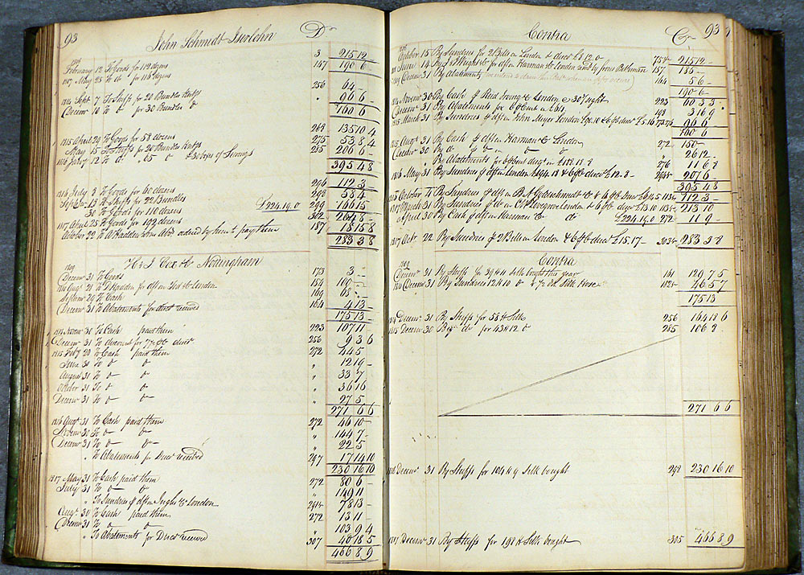

区块链核心概念
什么是区块链¶
定义¶
区块链（Blockchain）技术自身仍然在飞速发展中，目前还缺乏统一的规范和标准。
[wikipedia](https://en.wikipedia.org/wiki/Block_chain_(database) 给出的定义为：
A blockchain —originally, block chain —is a distributed database that maintains a continuously-growing list of data records hardened against tampering and revision. It consists of data structure blocks—which hold exclusively data in initial blockchain implementations, and both data and programs in some of the more recent implementations—with each block holding batches of individual transactions and the results of any blockchain executables. Each block contains a timestamp and information linking it to a previous block.
最早区块链技术雏形出现在比特币项目中。作为比特币背后的分布式记账平台，在无集中式管理的情况下，比特币网络稳定运行了近八年时间，支持了海量的交易记录，并未出现严重的漏洞。
注：比特币历史上唯一已知的漏洞事件曾导致比特币的恶意增发，但问题很快被发现并修正，相关非法交易被撤销。
公认的最早关于区块链的描述性文献是中本聪所撰写的 比特币：一种点对点的电子现金系统，但该文献重点在于讨论比特币系统，实际上并没有明确提出区块链的定义和概念。在其中，区块链被描述为用于记录比特币交易的账目历史。

记账技术历史悠久，现代复式记账系统（Double Entry Bookkeeping）是由意大利数学家卢卡·帕西奥利，1494 年在《Summa de arithmetica, geometrica, proportioni et proportionalità》一书中最早制定。复式记账法对每一笔账目同时记录来源和去向，首次将对账验证功能引入记账过程，提升了记账的可靠性。从这个角度来看，区块链是首个自带对账功能的数字记账技术实现。
更广泛意义地看，区块链属于一种去中心化的记录技术。参与到系统上的节点，可能不属于同一组织、彼此无需信任；区块链数据由所有节点共同维护，每个参与维护节点都能复制获得一份完整记录的拷贝。
跟传统的记账技术相比，其特点应该包括：
- 维护一条不断增长的链，只可能添加记录，而发生过的记录都不可篡改；
- 去中心化，或者说多中心化，无需集中的控制而能达成共识，实现上尽量分布式；
- 通过密码学的机制来确保交易无法抵赖和破坏，并尽量保护用户信息和记录的隐私性。
更进一步的，还可以将智能合约跟区块链结合到一起，让其提供除了交易（比特币区块链已经支持简单的脚本计算）功能外更灵活的合约功能，执行更为复杂的操作。这样扩展之后的区块链，已经超越了单纯数据记录的功能了，实际上带有点“普适计算”的意味了。
从技术特点上，可以看到现在区块链技术的三种典型应用场景：
| 定位 | 功能 | 智能合约 | 一致性 | 权限 | 类型 | 性能 | 代表 |
|---|---|---|---|---|---|---|---|
| 公信的数字货币 | 记账功能 | 不带有或较弱 | PoW | 无 | 公有链 | 较低 | 比特币 |
| 公信的交易处理 | 智能合约 | 图灵完备 | PoW、PoS | 无 | 公有链 | 受限 | 以太坊 |
| 带权限的交易处理 | 商业处理 | 多种语言，图灵完备 | 多种，可插拔 | 支持 | 联盟链 | 可扩展 | Hyperledger |
基本原理¶
区块链的基本原理理解起来并不难。基本概念包括：
- 交易（Transaction）：一次操作，导致账本状态的一次改变，如添加一条记录；
- 区块（Block）：记录一段时间内发生的交易和状态结果，是对当前账本状态的一次共识；
- 链（Chain）：由一个个区块按照发生顺序串联而成，是整个状态变化的日志记录。
如果把区块链作为一个状态机，则每次交易就是试图改变一次状态，而每次共识生成的区块，就是参与者对于区块中所有交易内容导致状态改变的结果进行确认。

在实现上，首先假设存在一个分布式的数据记录本（这方面的技术相对成熟），这个记录本只允许添加、不允许删除。其结构是一个线性的链表，由一个个“区块”串联组成，这也是其名字“区块链”的来源。新的数据要加入，必须放到一个新的区块中。而这个块（以及块里的交易）是否合法，可以通过一些手段快速检验出来。维护节点都可以提议一个新的区块，然而必须经过一定的共识机制来对最终选择的区块达成一致。
具体以比特币为例来看如何使用了区块链技术？客户端发起一项交易后，会广播到网络中并等待确认。网络中的节点会将一些等待确认的交易记录打包在一起（此外还要包括此前区块的哈希值等信息），组成一个候选区块。然后，试图找到一个 nonce 串放到区块里，使得候选区块的 hash 结果满足一定条件（比如小于某个值）。一旦算出来这个区块在格式上就合法了，就可以进行全网广播。大家拿到提案区块，进行验证，发现确实符合约定条件了，就承认这个区块是一个合法的新区块，被添加到链上。当然，在实现上还会有很多的细节。
比特币的这种基于算力的共识机制被称为 Proof of Work（PoW）。目前，要让 hash 结果满足一定条件并无已知的启发式算法，只能进行暴力尝试。尝试的次数越多，算出来的概率越大。通过调节对 hash 结果的限制，比特币网络控制约 10 分钟平均算出来一个合法区块。算出来的节点将得到区块中所有交易的管理费和协议固定发放的奖励费（目前是 12.5 比特币，每四年减半）。也即俗称的挖矿。
很自然会有人问，能否进行恶意操作来破坏整个区块链系统或者获取非法利益。比如不承认别人的结果，拒绝别人的交易等。实际上，因为系统中存在大量的用户，而且用户默认都只承认他看到的最长的链。只要不超过一半（概率意义上越少肯定越难）的用户协商，最终最长的链将很大概率上是合法的链，而且随着时间增加，这个概率会越大。例如，经过 6 个块后，即便有一半的节点联合起来想颠覆被确认的结果，其概率将为 $$\frac{1}{2}^6 = 1.6\%$$，即低于 $$\frac{1}{60}$$ 的可能性。
注：熟悉 Git 的人，应该会赞叹两者在设计上的异曲同工之妙。
分类¶
根据参与者的不同，可以分为公开（Public）链、联盟（Consortium）链和私有（Private）链。
公开链，顾名思义，任何人都可以参与使用和维护，典型的如比特币区块链，信息是完全公开的。
如果引入许可机制，包括私有链和联盟链两种。
私有链，则是集中管理者进行限制，只能得到内部少数人可以使用，信息不公开。
联盟链则介于两者之间，由若干组织一起合作维护一条区块链，该区块链的使用必须是有权限的管理，相关信息会得到保护，典型如银联组织。
目前来看，公开链将会更多的吸引社区和媒体的眼球，但更多的商业价值应该在联盟链和私有链上。
根据使用目的和场景的不同，又可以分为以数字货币为目的的货币链，以记录产权为目的的产权链，以众筹为目的的众筹链等。
误区¶
目前，对区块链的认识还存在不少误区。
首先，区块链不是数据库。虽然区块链也可以用来存储数据，但它要解决的问题是多方的互信问题。单纯从存储数据角度，它的效率可能不高，笔者也不推荐把大量的原始数据放到区块链上。
其次，区块链不是要颠覆现有技术。作为基于多项已有技术而出现的新事物，区块链跟现有技术的关系是一脉相承的，在解决多方合作和可信处理上多走了一步，但并不意味着它将彻底颠覆已有的商业模式。很长一段时间里，区块链的适用场景仍需摸索，跟已有系统必然是合作共存的关系。